Tanaka contours aka illuminated contours is terrain visualization method developed first by Prof. Tanaka Kitirito in 1950. The mimics 3D by illuminating the northwestern slopes and shading the opposite slopes. I followed Anita Graser’s tutorial to create Tanaka contours and updated it a bit as QGIS has evolved since then. Her tutorial was inspired by Hannes Kröger’s attempt to create the effect using QGIS.
You need a DEM for creating Tanaka contoours. If you don’t have any yourself then you may download free SRTM. First step is to create contours from the raster DEM by using Contours tool in QGIS. 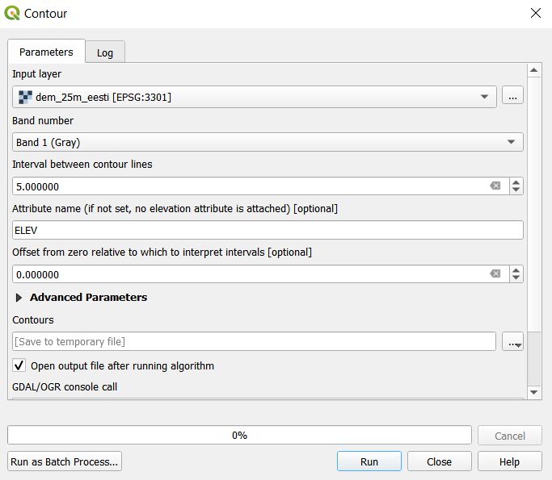 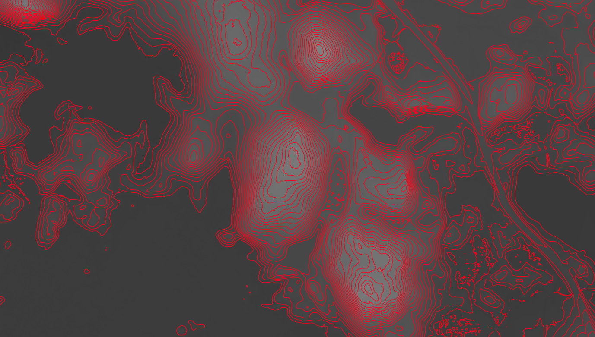
To apply different brightness for the contours depending on their aspect, we need to compute the orientation of every subsection of the contours. Therefore, we need to split the contour lines at each node. We can use v.split tool from the Processing toolbox. Set the maximum number of erices in a segment to 2. 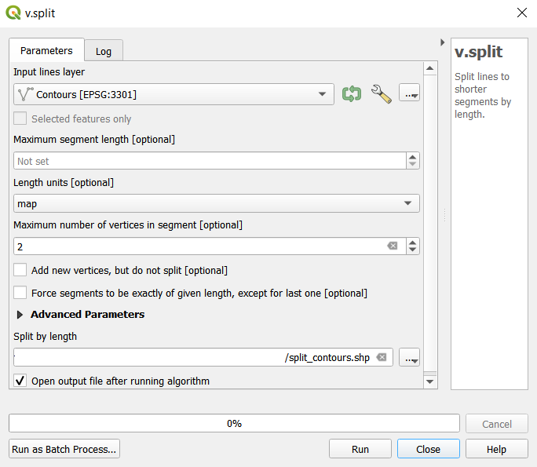 If we apply arrow style on the split contours then we can see that the segments run clockwise around the hills. 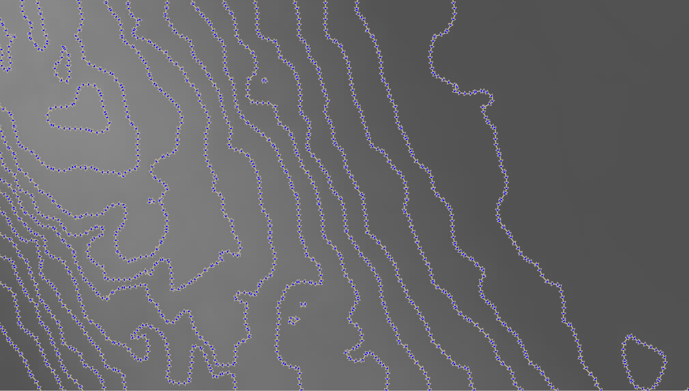
Now we can calculate the orientation (aspect) of the contour segments using, for example, using an expression:
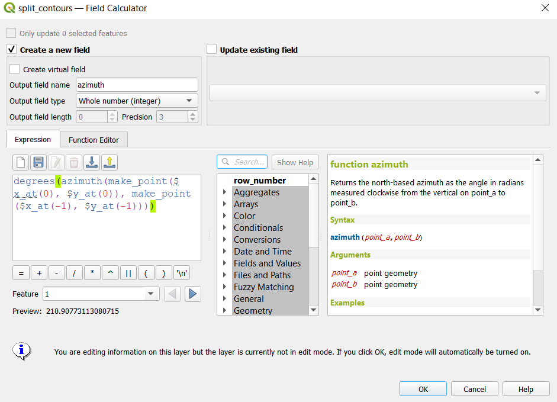
As the function ‘azimuth’ returns values in radians then we need to apply also the ‘degrees’ function to pbtain the values in 0-360 degrees.
Based on the orientation values of the segments, we can then use an expression to control the contour line color. For example, if we want the sun to appear in the north west (-45°) we can use:
color_hsl( 0,0,
scale_linear( abs(
( CASE WHEN "azimuth"-45 < 0
THEN "azimuth"-45+360
ELSE "azimuth"-45
END )
-180), 0, 180, 0, 100)
)
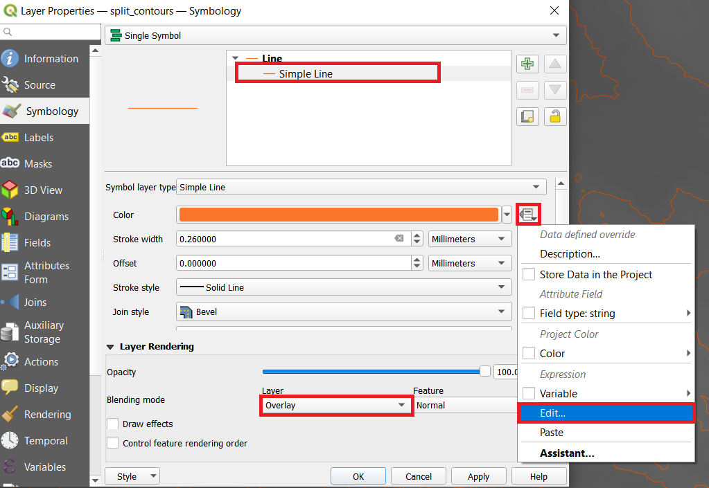 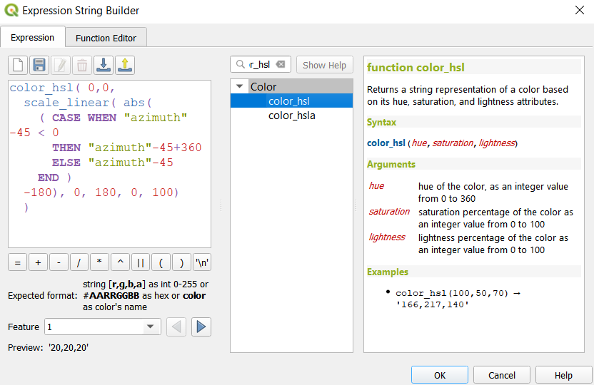 Function ‘color_hsl’ returns a string representation of a color based on its hue, saturation, and lightness attributes. We will make the first two values as zeroes because we just want the color to change from white to black (monochrome). Function ‘scale_linear’ transforms a given value (currently azimuth) from an input domain to an output range using linear interpolation.All this together will color the lines which are directly exposed to the sun (north-west) white hsl(0,0,100) while the ones in the shadows will be black hsl(0,0,0). Use the Overlay layer blending mode to blend contours and DEM color. 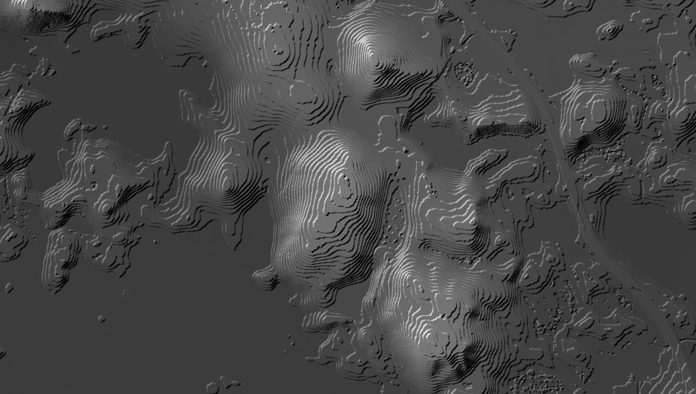
Choose the color palette to your liking and in order to match the contour lines with the color breaks, we need to make the color classification discrete instead of a smooth gradient. This can easily be achieved by changing the color interpolation mode of the DEM from Linear to Discrete and Mode from Continuous to Equal interval and matching the class number with the elevation classes on your map: 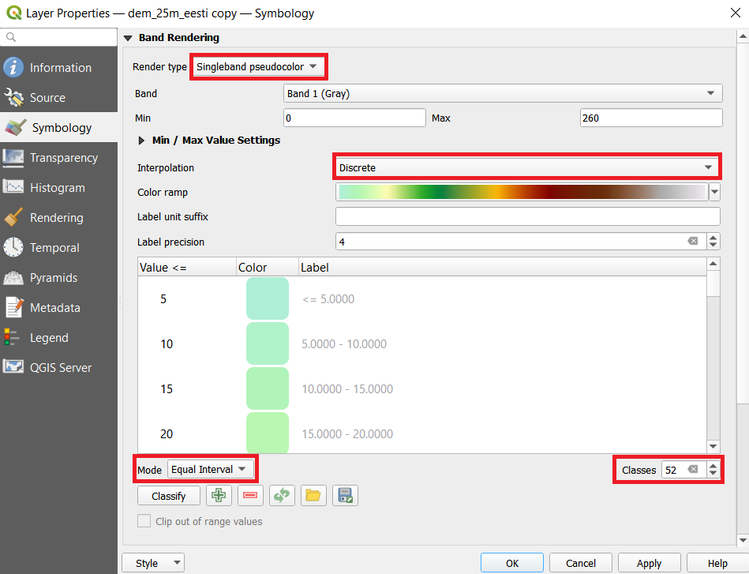 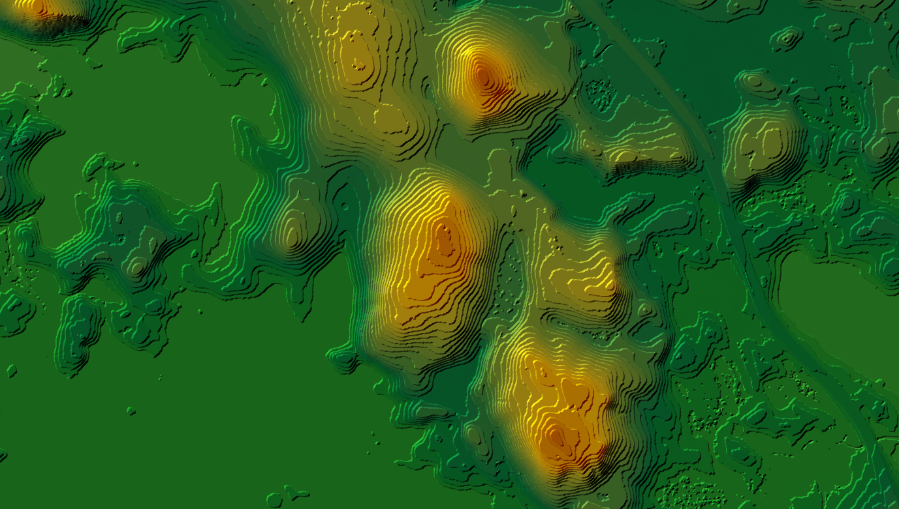
The effect would be even more realistic if the slopes in the sun would be wider and the orthogonal slopes would be thinner as pointed out by Hannes Kröger. For example, we can use the similar expression on the line width as on color to change the lines in the sun or shadow wider (0.6 in this example) and orthogonal lines thinner (0.1 in this example):
scale_linear(
abs( abs(
( CASE WHEN "azimuth"-45 < 0
THEN "azimuth"-45+360
ELSE "azimuth"-45
END )
-180) -90),
0, 90, 0.1, 0.6)
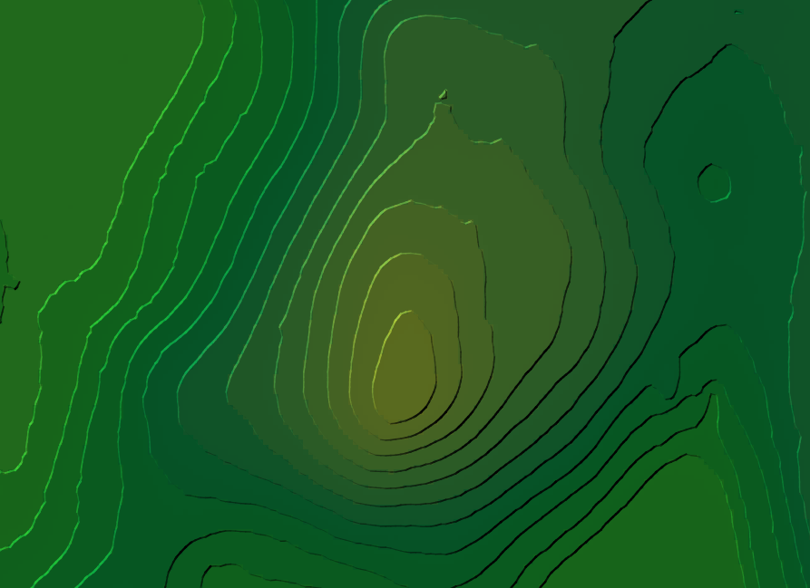